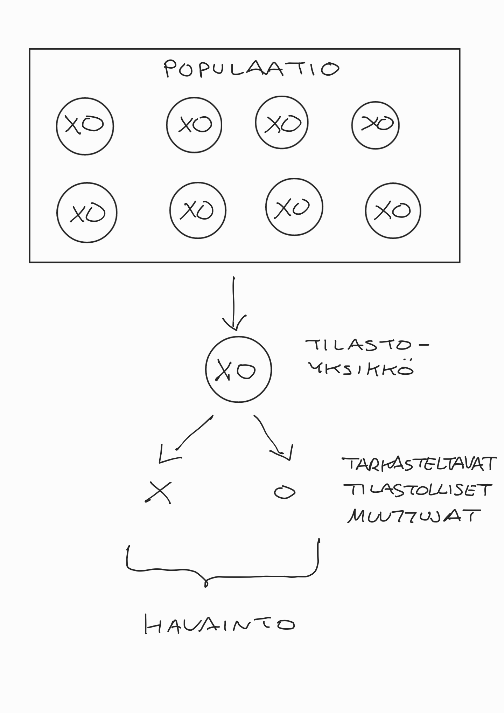
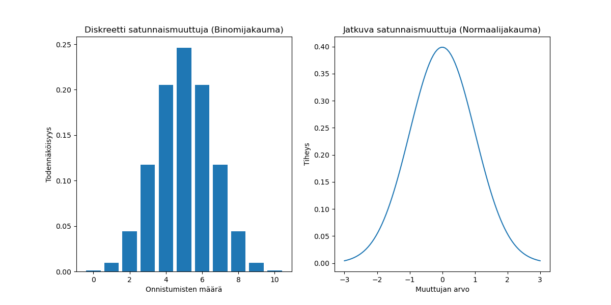
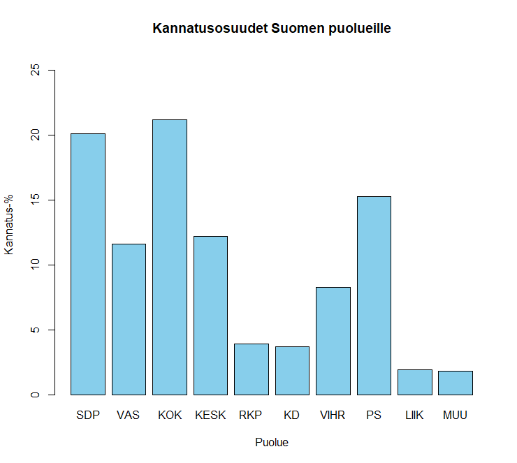
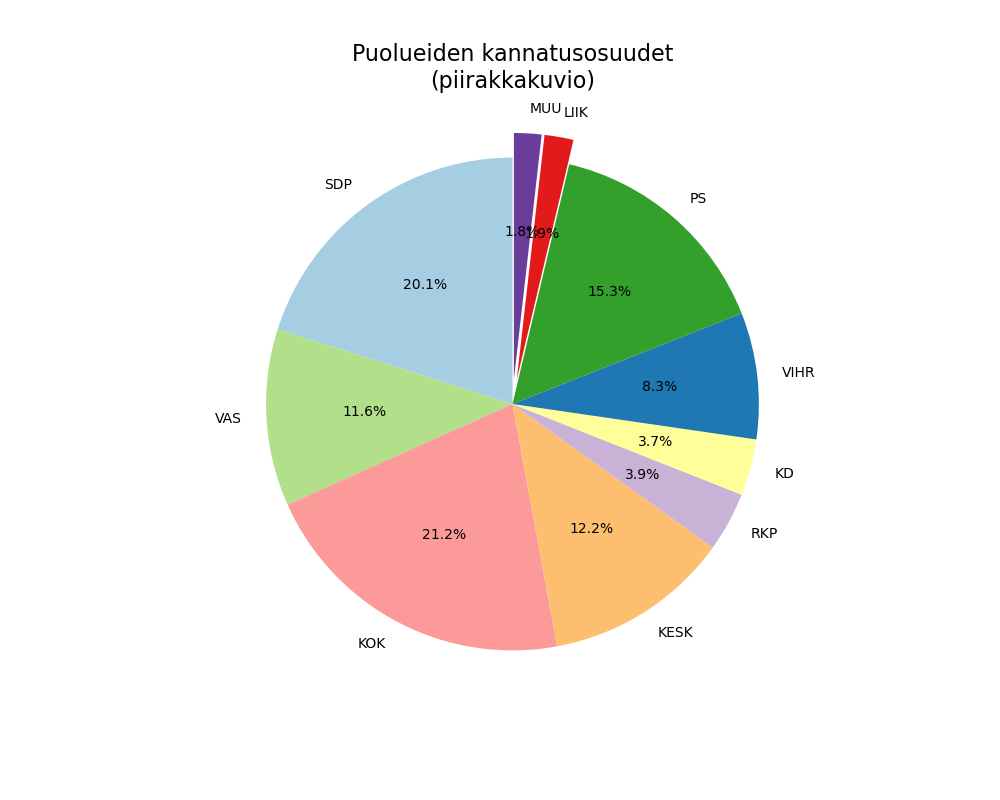
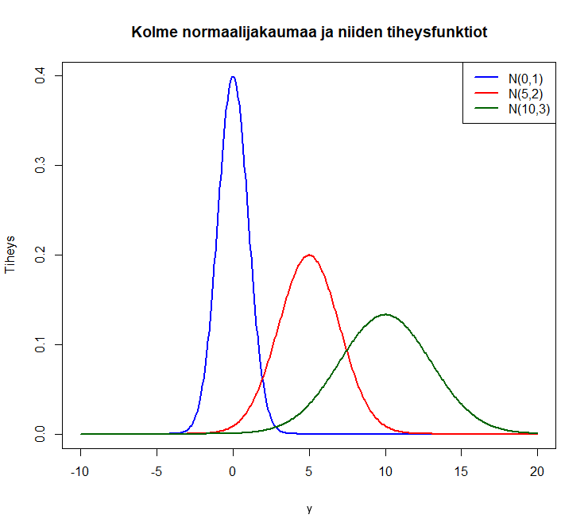

4 Sattuma ja satunnaisuus tilastotieteessä
Tässä luvussa pohdimme sattuman ja satunnaisuuden roolia yleisesti, mutta erityisesti tilastotieteessä ja tieteessä ja millä tavalla satunnaisuus liittyy tilastoaineistojen muodostumiseen ja siten tilastotieteeseen.
- Satunnaisuudella tarkoitetaan yleensä säännönmukaisuuden ja (täydellisen) ennustettavuuden puuttumista, ja kenties juuri siksi sitä voidaan pitää yhtenä maailman vaikuttavimmista ilmiöistä.
Jokainen haluaisi tietää mitä tuleman pitää ja siksi sattuma tekee elämästä mielenkiintoista! Se muokkaa niin meitä itseämme kuin meitä ympäröivää maailmaa mitä merkityksellisimmin tavoin - joskus jopa vasten tahtoamme ja usein vailla täyttä ymmärtystämme!
Ihmisen oma kokemus on kuitenkin altis kaikenlaisille virhepäätelmille, joita kutsutaan myös kognitiivisiksi vinoumiksi.
Haluamme löytää systematiikkaa ja tarkoitusta kaaoksesta sekä merkityksiä ja syy-seuraussuhteita sellaisista tapahtumista, jotka kuuluvat normaalin satunnaisen vaihtelun piiriin (vrt. signaali vs. kohina). Tällaisissa tilanteissa usein tilastollinen tarkastelu paljastaakin ilmiön todellisen, alkuperäisestä kuvitelmasta poikkeavan luonteen.
Erottaakseen systemaattisen vaihtelun satunnaisesta ja ymmärtääkseen oikeasti merkityksellisiä syy-seuraussuhteita, satunnaisuutta on välttämätöntä ymmärtää. Tämä välttämättömyys pätee erityisesti tiedeyhteisön jäseniin, jotka pyrkivät tutkimaan ympäröivän maailman satunnaisia ilmiöitä.
Tilastotiede perustuu satunnaisilmiöiden ja niiden generoimien aineistojen tutkimiseen, joten sattuman luonteen ymmärtäminen on keskeisessä roolissa niin tilastotieteen kuin muidenkin tieteiden ja lopulta maailman ymmärtämisessä.
4.1 Satunnaisilmiöt ja satunnaismuuttujat tilastotieteessä
Tilastolliset muuttujat tulkitaan satunnaisiksi, ja tilastollisen tutkimuksen tavoite onkin siis tutkia sitä satunnaisilmiötä, joka havaitut eli toteutuneet havaintoarvot on generoinut.
Olemme jo edellä todenneet:
Yksi tilastotieteen olennainen tehtävä onkin kehittää tilastollisia malleja, joiden avulla tutkimuksen kohteena olevaa satunnaisilmiöitä voidaan kuvata, selittää ja ennustaa.
Tilastollisen mallin satunnaisten piirteiden kuvaus perustuu todennäköisyyslaskentaan.
Satunnaisilmiö
Satunnaisilmiö. Reaalimaailman ilmiö on satunnaisilmiö, jos seuraavat ehdot pätevät:
- Ilmiöllä on useita erilaisia tulosvaihtoehtoja.
- Sattuma määrää mikä tulosvaihtoehdoista toteutuu, eli yksittäistä tulosta ei voida tietää etukäteen.
- Vaikka tulos vaihtelee ilmiön toistuessa satunnaisesti, käyttäytyy tulosvaihtoehtojen suhteellisten osuuksien jakauma tilastollisesti stabiilisti ilmiön toistokertojen lukumäärän kasvaessa.
Tilastollisella stabiiliudella tarkoitetaan sitä, että on mahdollista arvioida kuinka todennäköisiä erilaiset tapahtumat eli satunnaisilmiön tulosvaihtoehdot ovat.
Toisin sanoen satunnaisilmiön tulosvaihtoehtoihin liittyy säännönmukaisuutta, mikä tulee esille ilmiön toistuessa.
Tämä liittyy myös siihen, että (useimmiten) satunnaisilmiön lopputulos ei ole täysin ennustamaton. Ts. saatamme kyetä (ajoittain) ennustamaan/ennakoimaan lopputulemaa, mutta täyttä varmuutta lopputulemasta ei siis ole.
Esimerkkejä satunnaisilmiöistä:
Tyypillinen esimerkki on uhkapelit, kuten kortti- ja noppapelit, arpajaiset, lotto tai ruletti: näitä käytetäänkin usein todennäköisyyslaskennan peruskursseilla satunnaisilmiöiden esittelyyn.
- Huom: Osakesijoittaminen, urheiluvedonlyönti tai esim. pokeri eivät kuulu uhkapeleihin, jos niitä harjoitetaan systemaattisesti ja ammattimaisesti (ml. asianmukainen riskienhallinta).
Lukion biologian tunneilta muistetaan, että perinnöllisyyskin on osaltaan sattumaa: se määrää kummalta vanhemmalta perittävä geenikopio on peräisin.
- Vastaavasti populaatiotasolla eri ominaisuuksien jakautuminen yksilöiden ja populaatioiden välillä on satunnaista.
- Populaatiotaso voi tässä tarkoittaa esimerkiksi erilaisten eliöiden eri alueilla eläviä populaatioita, joiden välisiä eroja pyritään tutkimaan ja selittämään.
- Vastaavasti ihmisten, ihmisryhmien ja ihmisten muodostamien organisaatioiden sisäisessä ja välisessä käyttäytymisessä on useita satunnaisia elementtejä.
Jopa hyvin deterministiseen toimintaperiaatteeseen tähtäävässä tehdastuotannossa käy satunnaisia virheitä tuotteiden valmistusprosesseissa, jotka ilmenevät esimerkiksi viallisina tuotteina.
Vastaavasti luonnontieteellisiin mittauksiin liittyy mittausvirheitä, jotka kuuluvat satunnaisvaihtelun piiriin. Esimerkiksi varhaisissa valonnopeusmittauksissa mittausvirheet saattoivat olla suuriakin!
Myös kvanttimekaniikan ja hiukkasfysiikan tutkimat ilmiöt ovat perusluonteeltaan satunnaisia.
Tilastollista vaihtelua ilmentävät tilastolliset muuttujat tulkitaan satunnaismuuttujiksi ja havainnot (havaintoarvot) voidaan näin ollen tulkita näiden satunnaismuuttujien realisoituneiksi arvoiksi. Tällöin tilastollisen tutkimuksen kohteena on nämä havainnot generoinut satunnaisilmiö. Satunnaismuuttuja
Satunnaismuuttuja (usein lyhyesti sm., englanniksi random variable, ja merkitään esim. (Y), ja kutsutaan ajoittain myös stokastiseksi muuttujaksi) on todennäköisyyslaskennan peruskäsite, jolla tarkoitetaan satunnaisilmiön määräämää lukua.
- Satunnaismuuttujan (Y) realisoituvaa arvoa (y) kutsutaan realisaatioksi tai toteumaksi.
- Tilastollinen aineisto muodostuu useiden satunnaismuuttujien (tilastoyksiköiden tutkimusmuuttujien) realisoituneista arvoista.
- Realisoituneiden arvojen vaihtelua tilastoyksiköiden välillä kutsutaan satunnaisvaihteluksi ja tätä vaihtelua kuvataan satunnaismuuttujan todennäköisyysjakaumalla.
Satunnaismuuttuja siis kuvaa tarkasteltavan mitattavan ominaisuuden (satunnais)vaihtelua tutkimuksen kohteiden eli tilastoyksiköiden joukossa.
- Mitattavan ominaisuuden mahdolliset arvot määräävät satunnaismuuttujan luonteen. Yleisesti satunnaismuuttujat jaetaan kahteen luokkaan: jatkuviin ja diskreetteihin.
Tähän jakoon voidaan liittää myös jako kvantitatiivisiin ja kvalitatiivisiin satunnaismuuttujiin. Myöhemmin esiteltäviin mitta-asteikkoihin liittyen kvalitatiiviset sm:jat liittyvät luokittelu- tai järjestysasteikkoon ja vastaavasti kvantitatiiviset sm:jat välimatka- ja suhdeasteikkoon.
Huom. ajoittain kvantitatiivisten ja kvalitatiivisten muuttujien jako tehdään niin, että myös diskreetit sm:jat luetaan kvantitatiivisiksi muuttujiksi.
- Satunnaismuuttujan todennäköisyysjakauma määrää erilaisten tulosvaihtoehtojen todennäköisyydet ja mahdollistaa täten tilastollisen päättelyn. Satunnaisuus eroaa mielivaltaisesta prosessista siinä, että satunnaista ilmiötä voidaan kuvata jollakin tilastollisella lailla/mallilla kun taas mielivaltaista prosessia ei.
Jatkuvat ja diskreetit sm:jat
Jatkuvat ja diskreetit satunnaismuuttujat
- Satunnaismuuttuja (Y) on jatkuva, jos se voi saada ylinumeroituvan määrän arvoja tai ts. minkä tahansa arvon joltain väliltä, kuten tyypillisesti minkä tahansa arvon joltain reaalilukuväliltä \((-\infty,\infty)\).
- Satunnaismuuttuja (Y) on diskreetti, jos se voi saada vain joitain mahdollisia arvoja (vain yksittäisiä, äärellisen tai numeroituvasti äärettömän määrän, arvoja). Yksinkertaisimmillaan diskreetti satunnaismuuttuja (Y) on kaksiarvoinen eli binäärinen, jolloin sen mahdollisia arvoja tyypillisesti merkitään (y=0) ja (y=1).
Todetaan lyhyesti vielä diskreetteihin sm:jiin liittyen, että mahdollisia luokkia voi olla myös enemmän kuin kaksi. Tällöin ko. kategorinen vastemuuttuja voi olla sellainen, että kategoriat voidaan järkevästi järjestää järjestykseen
Esimerkkejä:
Järjestämättömät luokat: esim. henkilön kotimaa, auton väri tai sairaala, jossa lääketieteellinen operaatio tapahtuu.
Järjestetyt luokat: esim. sotilashenkilöiden arvo.
Esimerkki: sademäärä satunnaismuuttujana. Huomista sadantaa eli sademäärää tietyllä alueella voidaan pitää (ennen huomista sadepäivää) satunnaismuuttujana (Y) ja mitattua sademäärää (sadepäivän jälkeen) täten sademäärän yhtenä realisaationa (y).
Yleensä sademäärää kohdellaan jatkuvana muuttujana millilitroissa. Mikäli kuitenkin määritetään toteumaksi jonkin sademäärän kynnysarvon, esimerkiksi yksi milli, ylittävä sademäärä, on kyseessä diskreetti kaksiarvoinen (binäärinen) muuttuja (sademäärä on joko yli tai alle yksi milli).
Tutkija voisi olla esimerkiksi kiinnostunut sadannan eroista kuntien tai alueiden välillä tietyssä maasssa sekä tähän kenties vaikuttavista syistä. Tätä tutkiakseen hän tarvitsisi tilastollisen aineiston tutkimus- ja taustamuuttujineen eri alueilta, joka voitaisiin kerätä esimerkiksi satunnaisotannalla (palataan myöhemmin) asettamalla sadannan mittaavia astioita satunnaisesti kyseisille alueille.
Huomioita: Ajoittain tietyn suureen/ilmiön mallinnuksessa voidaan perustellusti käyttää näkökulmasta riippuen kumpaan vaan luokkaan (diskreetit ja jatkuvat sm:jat) kuuluvaa tilastollista mallityyppiä.
Esimerkkejä. Suomen COVID19-tartuntatapauksia tutkittaessa, tartunnan saaneiden lukumäärä oli periaatteessa diskreetti satunnaismuuttuja, joka sai yksittäisen (kokonaisluku)arvon joka kuukausi, mutta käytännössä lukumäärät ovat tässä tapauksessa sen verran suuria, että niitä on perusteltua kohdalla jatkuva-arvoisena muuttujana.
Vastaavasti esimerkiksi potilaan jonotusaika päivystyksessä voi periaatteessa saada minuuttitasolla hyvinkin diskreettejä arvoja, mutta toisaalta myös minkä tahansa arvon tietyltä reaalilukuväliltä, kuten \([0,\infty)\), ts. mikä vain positiivinen arvo) aikayksikköä muutettaessa ja tällöin käytettäisiin jatkuviin sm:jiin perustuvia tilastollisia menetelmiä.
4.2 Satunnaisilmiöiden tilastollisen mallintamisen perusteita
Seuraavaksi käydään vaiheittain läpi (yleisellä tasolla) todennäköisyyden (todennäköisyyslaskennan) näkökulmasta sitä, miten reaalimaailman satunnaisilmiöitä voidaan tilastollisin menetelmin mallintaa. Kaikkiin näihin vaiheisiin syvennytään tulevissa jaksoissa vielä tarkemmin, mutta tämän osion tarkoituksena on havainnollistaa sitä, miten tilastotieteessä mallinnetaan satunnaisilmiöitä.
Jo aiemmin on todettu, että tilastollisen tutkimuksen lähtökohta on aineisto eli data. Aineiston tulee kuvata tutkittavaa satunnaisilmiötä sillä tavalla, että esitettyihin tutkimuskysymyksiin voidaan vastata ja/tai hypoteeseja testata.
- Aineiston havaittujen arvojen taustalla olevat satunnaismuuttujat määräävät käytettävän tilastollisen mallin, joka kuvaa tutkittavan ilmiön satunnaista luonnetta. Lopulta tätä tilastollista mallia voidaan käyttää tilastollisten analyysien tekemiseen, kuten ennusteiden muodostamiseen ja/tai hypoteesien testaamiseen.
Kerätyn (tai havaitun) aineiston pohjalta pyritään tekemään tutkimuskysymystä vastaavia päätelmiä tutkimuksen kohteena olevasta ja aineiston generoineesta satunnaisilmiöstä.
Tilastotieteessä tilastollisen tutkimusaineiston muodostumista voidaan pitää esimerkkinä satunnaisilmiöstä. Voimme ajatella (tässä kohtaa kurssia ja opintoja), että tilastollisen tutkimuksen kohteet on valittu, tavalla taikka toisella, arpomalla.
- Arvonta on mainio esimerkki satunnaisilmiöstä, sillä siihen liittyy aina ennustamattomuutta: vaikka yksittäisen arvonnan tulosta ei voi tietää etukäteen, noudattaa se kuitenkin todennäköisyyden lakeja.
- Koska arvonnan tulos vaihtelee satunnaisesti arvontakerrasta toiseen, myös tutkimuksen kohteita kuvaavat tiedot vaihtelevat satunnaisesti arvontakerrasta toiseen.
Tilastollisten aineistojen kerääminen arvontaa hyödyntäen
Satunnaisotanta: Otannalla tarkoitetaan laveasti tutkimusaineistojen keräämisen menetelmiä. Erilaisten virhelähteiden kontrolloimiseksi tutkimuksen kohteet on syytä valita arpomalla.
Esimerkiksi tutkittaessa peruskouluopetusta, kaikkien koulujen tutkiminen olisi liian työlästä ja kallista. Tällöin sovelletaan erilaisia otantamenetelmiä, jotka varmistavat että tutkimukseen valikoituu satunnaisesti edustava otos Suomen kouluista.
Satunnaistetut kokeet: Kokeellisessa tutkimuksessa tavoitteena on vertailla erilaisten käsittelyiden vaikutuksia kokeen kohteisiin. Erilaisten virhelähteiden kontrolloimiseksi käsittelyt on syytä arpoa kohteille.
Esimerkiksi lääketutkimuksessa on tärkeää, että testattavan lääkeaineen vaikutusta tutkittaessa testattavaksi henkilöiksi ei valikoidu esimerkiksi juuri tietyn ikäisiä ihmisiä. Lääkeaine saattaa vaikuttaa eri tavoin eri ikäisiin koehenkilöihin, joten satunnaisotanta eri ikäisistä on tarpeen tutkimusta tehdessä.
Tilastollisen aineiston keräämistä, eli otantateoriaa, ja sen tavoitteita käsitellään myöhemmin tämän materiaalin kuluessa.
Satunnaisotannalla kerätyissä aineistoissa eli otoksissa satunnaisuus perustuu siihen, että satunnaismuuttujien toteutuvat arvot (ja niistä lasketut tunnusluvut, kuten keskiarvo, joita tarkastellaan hetken kuluttua) vaihtelevat satunnaisesti otoksesta toiseen, koska otokseen kuuluvat havaintoarvot vaihtelevat otoksesta toiseen.
- Tämä vaihtelu on kuitenkin tilastollisesti stabiilia (ks. yllä), eli eri otokset ilmentävät samaa satunnaisilmiötä. Ts. otantaa toistettaessa eri aineistojen sisältämä satunnaisvaihtelu on aineiston generoineen todennäköisyysjakauman mukaista myös otosten välillä.
- Tilastotieteen tehtävä on tuottaa tilastollisia malleja tälle satunnaisilmiöissä havaittavalle tilastolliselle stabiliteetille. Tämä säännönmukaisuus on siis tilastollisen tutkimuksen kohde.
4.3 Havaintoaineisto eli data
Tilastotieteellinen tutkimus tarkastelee reaalimaailman ilmiöitä. Täten tutkimuskohteena on tavallisessa elämässä tavattavia asioita, ihmisiä tai tapahtumia.
Tilastollinen tutkimus aloitetaan tutkimusaineiston keruun suunnittelulla.
- ks. “PPADC/OSAAT-sykli” luvussa 2
Edellä esitellyt satunnaismuuttujat liittyvät hyvin olennaisesti lopulta analysoitavan tutkimusaineiston muodostumiseen. Tilastotieteessä nimittäin ajatellaan, että satunnaismuuttujien reaalisaatioiden kerätty joukko muodostaa lopulta tarkasteltavan havaintoaineiston eli datan.
Kuten jo aiemmin määrittelimmme, tutkimuskohteita kutsutaan tilastoyksiköiksi, joilta tarkasteltaan erilaisia mitattavia tilastollisia muuttujia.
Kun tarkasteltavien tilastoyksikön tilastollisten muuttujien (numeeriset) arvot havaitaan, kutsutaan näiden arvojen joukkoa havainnoksi. Havainto/havainnot
Havainto muodostuu tilastoyksikön tarkasteltavien tilastollisten muuttujien havaitusta arvoista.
Lopulta havainnot muodostavat havaintoaineiston eli datan. Data
Havaintoaineisto eli data on tilastoyksiköiden tilastollisista muuttujista kerätty havaintojen joukko. See koostuu populaation (tyypillisesti sen osajoukon) tilastoyksiköiden havaituista tilastomuuttujien arvoista eli havainnoista.
Havaintoaineisto voidaan koota taulukoksi, johon listataan tilastoyksiköt riveille ja tilastomuuttujat sarakkeisiin. Jos havaintoaineisto koostuu \(n\):stä tilastoyksiköstä, joista jokaisesta on kerätty esim. (m):stä tilastomuuttujasta havainnot, niin aineisto voidaan esittää taulukon muodossa seuraavasti:
| tilastomuuttuja 1 | tilastomuuttuja 2 | … | tilastomuuttuja (m) | |
|---|---|---|---|---|
| tilastoyksikkö 1 | (y_{1,1}) | (y_{1,2}) | … | (y_{1,m}) |
| tilastoyksikkö 2 | (y_{2,1}) | (y_{2,2}) | … | (y_{2,m}) |
| () | () | () | () | |
| tilastoyksikkö (n) | (y_{n,1}) | (y_{n,2}) | … | (y_{n,m}) |
Tässä siis rivillä (i) on (i). tilastoyksikön havainto ja sarakkeessa (j) on (j):tä tilastollisesta muuttujasta havaittu arvo (y_{i,j}). Ts. yhdellä rivillä on yhden tilastoyksikön tiedot kaikista tilastomuuttujista ja yksi sarake on kaikkien tilastoyksiköiden tiedot yhdestä tilastomuuttujasta.
Esimerkki. Empiirisenä esimerkkinä ylläolevasta taulukkomuotoisesta aineistosta on isän ja pojan pituuksista koostuva aineisto (tätä tarkastellaan vielä tarkemmin myöhemmin), jossa on havaintoja 1078 kappaletta (ts. \(n=1078\)). Tämän aineiston havainnot merkitsevät oheista taulukkoa
| Havaintopari (isä_i, poika_i) | Isän pituus (cm) | Pojan pituus (cm) |
|---|---|---|
| (isä_1, poika_1) | 165.1 | 151.9 |
| (isä_2, poika_2) | 160.8 | 160.5 |
| () | () | () |
| (isä_1078, poika_1078) | 178.6 | 170.2 |
Usein, varsinkin parhaillaan kiihtyvällä vauhdilla, kerättävät havaintoaineistot ovat niin suuria, ettei edellisenkaltaisesta havaintotaulukosta voida usein suoraan tarkastelemalla nähdä aineiston pääpiirteitä. Tällöin voi olla tarpeen luokitella aineistoa taulukon muodostamiseksi.
- Luokittelussa on kysymys aineiston tiivistämisestä kohtuullisen kokoiseksi ja havainnollisempaan muotoon. Luokittelussa tilastomuuttujan arvot sijoitetaan eri luokkiin siten, että yhden tilastomuuttujan arvo voi kuulua vain yhteen luokkaan.
- Luokka ilmoitetaan yleensä luokkavälinä, kuten reaalilukuvälinä. Esimerkiksi henkilön ikä on tapana luokitella ikäjakauman kuvaamisessa 10-vuotisluokkiin (15–24, 25–34,…), vaikka periaatteessa ikä voitaisiin ilmoittaa minuutinkin tarkkuudella.
- Luokkien lukumäärään vaikuttavat muun muassa tilastomuuttujan arvojen vaihteluväli ja havaintoaineiston laajuus.
- Luokittelussa pyritään siihen, että luokkien lukumäärä saadaan tarvittaessa luokkia yhdistämällä kohtuulliseksi ja että luokat valitaan tasavälisesti eli siten, että kahden peräkkäisen luokan alarajojen erotus on vakio.
- Kun aineistoa luokitellaan, aineiston luettavuus paranee mutta toisaalta osa tiedoista (informaatiosta) menetetään eivätkä yksittäiset havaintoarvot ole enää tiedossa.
Kvantitatiivisen tutkimuksen aineistoksi kelpaa periaatteessa kaikki havaintoihin perustuva informaatio, joka on mittauksen avulla muutettavissa numeeriseen muotoon.
- Kaikki havaitut tilastolliset muuttujat eivät ole aina mielenkiintoisia. Tutkimuksen kannalta mielenkiintoisia muuttujia kutsutaan tutkimusmuuttujiksi, joiden lisäksi havaintoaineisto pitää mahdollisesti sisällään taustamuuttujia.
Esimerkiksi, jos tutkimuksella halutaan tietoa suomalaisen aikuisväestön mielipiteistä, havaintoyksikköinä ovat aikuisväestöön kuuluvat henkilöt. Jos halutaan tietoa suomalaisista kunnista, havaintoyksikköinä ovat Suomen kunnat jne.
- Ensimmäisessä tapauksessa tilastollisina muuttujina on aikuisväestön mielipiteet, joita voidaan selvittää esimerkiksi kyselytutkimuksella. Toisaalta voidaan myös kerätä taustamuuttujiksi haastatelluista muita tietoja, kuten asuinpaikka, ikä ja ammatti.
Kaikkia mielenkiintoisia muuttujia ei kuitenkaan välttämättä voida havaita, eli niille ei voida määrittää numeerista arvoa. Tällöin puhutaan nk. latenteista muuttujista, eli muuttujista joita ei suoraan havaita mutta joiden oletetaan vaikuttavan havaittavien muuttujien taustalla.
Latentteja muuttujia ovat esimerkiksi elämänlaatu, onnellisuus, konservatiivisuus, yms.
Latentteja muuttujia voidaan rakentaa tilastollisten mallien avulla käyttäen hyödyksi niihin liittyviä havaittuja muuttujia.
Myöhemmin tässä materiaalissa palataan vielä eri yhteyksissä muutamiin perustason graafisiin esitystapoihin miten tilastotaineistoja voidaan havainnollistaa. Graafiset menetelmät ovat erittäin tärkeä osa aineiston havainnollistamista. Kuvat helpottavat aineiston tulkitsemista ja toimivat usein perusteltuna lähtökohtana monimutkaisempien tilastollisten mallien käyttämiselle.
4.4 Populaation luonteesta
Populaatio on siis ryhmä, josta otos on peräisin.
Populaatio ja otos määriteltiin lyhyesti jo aiemmin (kertaa siis näiden määritelmät!).
Esim. kyselytutkimuksessa populaatio voi olla kirjaimellinen populaatio, kuten tietyn alueen asukkaat, mutta mittauksia tehtäessä, tai kun kaikki mahdollinen data on käytettävissä, populaatio muuttuu matemaattiseksi idealisaatioksi, joka edustaa kaikkia mahdollisia ko. populaatioon kuuluvia havaintoja.
Populaatio voidaan ajatella yksilöiden joukkona, mutta myös todennäköisyysjakaumana satunnaisille havainnoille, joka on otettu kyseisestä populaatiosta.
Tämä tarkoittaa, että populaatio ei ole vain fyysinen joukko yksilöitä, vaan se edustaa myös kaikkia mahdollisia havaintoja, jotka voidaan poimia kyseisestä joukosta.
Populaatioita voidaan tiivistää esim. odotusarvon ja varianssin kautta, jotka kuvaavat populaation ominaisuuksia samalla tavalla kuin otoskeskiarvo ja otosvarianssi kuvaavat otoksen ominaisuuksia.
Aineisto on siis lopulta arvonnan tulos eli mitkä perusjoukon (populaation) tilastoyksiköt tulevat valituksi otokseen, ja siten myös tutkimuksen kohteita kuvaavat tiedot vaihtelevat satunnaisesti arvontakerrasta toiseen.
Usein data ei käytännössä synny kirjaimellisesta populaatiosta otoksena. Kun meillä on kaikki olemassa oleva data, voimme kuvitella sen olevan peräisin sellaisesta populaatiosta tapahtumia, jotka olisivat voineet tapahtua, mutta eivät tapahtuneet. Tämä tarkoittaa, että vaikka meillä olisi kaikki mahdollinen data, voimme silti käyttää tilastollisia menetelmiä ja malleja analysoidaksemme sitä ikään kuin se olisi otos suuremmasta, hypoteettisesta populaatiosta.
Populaation muodostavilta tilastoyksiköiltä havaitaan/mitataan/tarkastellaan tutkimuksen kannalta niiden kiinnostavia ominaisuuksia eli tilastollisia muuttujia ja lopulta niiden arvoja.
- Mielenkiinnon kohteena olevia tilastollisia muuttujia kutsutaan tutkimusmuuttujiksi (kuten tulot ja kuntien äänestysprosentti) ja niiden lisäksi voidaan kerätä lisätietoa eli taustamuuttujia (näitä voisivat olla esimerkiksi asuinpaikka ja kunnan väkiluku).
Esimerkki: vaalitutkimukset. Politiikan tutkimuksen alalla yksi mielenkiintoinen tutkimuskohde on tutkia kuntavaaleissa äänestävien ihmisten tuloja.
Tällöin jokainen äänioikeuttaan käyttävä muodostaa oman tilastoyksikkönsä. Vastaavasti populaationa (perusjoukkona) toimii kaikki äänestysikäiset kansalaiset, jotka äänioikeuttaan käyttävät.
Toinen tutkimuskysymys voisi käsitellä kuntien välistä äänestysaktiivisuutta.Tällöin jokainen kunta muodostaa oman tilastoyksikkönsä ja vastaavasti kaikki Suomen kunnat muodostavat populaation.
Kuntien äänestysaktiivisuus saadaan kuitenkin tutkimalla kunnan sisäistä äänestysaktiivisuutta. Toisin sanoen, voidaksemme mitata kuntien äänestysaktiivisuutta, tulee ensiksi selvittää kuntien äänestysikäiset kansalaiset ja äänioikeuttaan käyttävät.
Pohdi, miksi pelkästään äänioikeuttaan käyttävien tutkiminen saattaisi olla tutkimuksen tulosten luotettavuuden kannalta ongelmallista?
- Tilastoyksiköiden tilastollisilla muuttujilla on tietty mahdollisten arvojen joukko, ja näillä arvoilla on jokin jakauma populaatiossa. Palaamme myöhemmin tilastotieteen keskeisiin jakaumiin ja niiden esittelyyn tarkemmin, mutta määritellään seuraavassa kuitenkin populaatiojakauma.
Populaatiojakaumalla tarkoitetaan potentiaalisten havaintojen jakaumaa koko populaatiossa. Se viittaa myös geneerisen satunnaismuuttujan todennäköisyysjakautumaan, joka kuvaa, kuinka todennäköistä on saada tietty arvo satunnaismuuttujan realisaationa.
Esimerkiksi edelliseen esimerkkiin viitaten äänestysikäisten tulot voivat määritelmästä riippuen saada minkä tahansa positiivisen arvon mutta kunnan äänestysprosentti on luonnollisesti rajattu nollan ja sadan prosentin väliin.
4.5 Todennäköisyysjakauma
4.5.1 Yleistä taustaa todennäköisyysjakaumille
Tilastolliset menetelmät perustuvat todennäköisyyslaskennan tuloksiin ja tarjoavat keinon hallita satunnaisuuden aiheuttamaa epävarmuutta.
Todennäköisyysjakauma
Tilastolliset mallit perustuvat satunnaismuuttujan mahdollisten tulosvaihtoehtojen todennäköisyyksiä kuvaavalle todennäköisyysjakaumalle, joka määrää millä todennäköisyydellä satunnaismuuttuja saa erilaisia arvoja.
Kertymäfunktio
Todennäköisyysjakauma on yleisnimitys matemaattiselle ilmaisulle, joka kuvaa satunnaismuuttujan \(Y\) mahdollisuutta saada arvon \(y\). Tämä jakauma auttaa ymmärtämään satunnaismuuttujan käyttäytymistä ja tekee mahdolliseksi tilastollisten analyysien, kuten esim. ennusteiden tekemisen.
Satunnaismuuttujalla \(Y\) on kertymäfunktio, joka määritellään kaavalla \[\begin{equation*} F_Y(y) \stackrel{merk.}{=} F(y) = P(Y ≤ y) \end{equation*}\] eli kyseessä on todennäköisyys, että \(Y\) saa arvon, joka on enintään \(y\). Ts. kertymäfunktion arvo on nollan ja yhden välillä (eli ts. \([0,1]\)): \(\lim_{y \to -\infty}\, F(y) = 0\) ja \(\lim_{y \to \infty}\, F(y) = 1\), ja kuvaa paljonko todennäköisyysmassaa on kertynyt vasemmalta pisteeseen \(y\) saakka.
Pistetodennäköisyysfunktio Diskreetin satunnaismuuttujan todennäköisyysjakauma voidaan usein esittää taulukkomuodossa. Eri arvojen todennäköisyydet muodostavat kyseisen satunnaismuuttujan todennäköisyysjakauman, pistetodennäköisyysfunktion (ptnf:n), jota voidaan havainnollistaa esimerkiksi pylväsdiagrammilla
- Esimerkkejä diskreeteistä tn-jakaumista ovat mm. Bernoulli-jakauma, binomijakauma ja Poisson-jakauma. Näitä käsitellään tarkemmin Osassa II.
Esimerkiksi allaesiteltävä puoluiden kannatusosuuksia koskeva esimerkkitapaus on esimerkki pistetodennäköisyysfunktiosta, jonka taustalla voidaan ajatella olevan satunnaismuuttuja \(Y\), joka kuvaa yksittäisen satunnaisen äänestäjän kannattamaa puoluetta. Ennen hänen vastaustaan voidaan ajatella, että on olemassa tietyt kyselyhetken aikaiset todennäköisyydet, että ko. henkilö kannattaa tiettyä puoluetta.
Tiheysfunktio Vastaavasti jatkuvan satunnaismuuttujan arvot muodostavat jonkin reaaliakselin välin, joka sisältää äärettömän määrän lukuja. Tämän vuoksi jatkuvan satunnaismuuttujan todennäköisyysjakauman esittäminen pistetodennäköisyysfunktion kautta ei ole luontevaa, vaan jakauma esitetään satunnaismuuttujan tiheysfunktion avulla.

Havaitulle aineistolle perustettava tilastollinen malli perustuu juuri sm:jan todennäköisyysjakaumaan, joka riippuu yhdestä tai useammasta (arvoltaan yleisesti tuntemattomasta) parametrista ja kuvaa kyseisen muuttujan säännönmukaista satunnaisvaihtelua.
Parametrit määrittävät todennäköisyysjakauman (ja/tai tilastollisen mallin) käyttäytymisen. Parametrit estimoidaan (=arvioidaan) käytettävissä olevan aineiston perusteella.
Esimerkiksi myöhemmin (Osassa II) esiteltävässä yhden selittäjän lineaarisessa regressiomalli sisältää kaksi parametria (ja varianssiparametrin), jotka määrittävät regressiosuoran yhtälön (ns. vakiotermi ja kulmakerrointa mittaavaa parametri).
Parametrien estimointi on keskeinen osa tilastollista analyysiä, kuten erinäisten päätelmiä/tulkintojen tekemistä ja ennusteiden muodostamista.
Tilastollinen malli riippuu siis tehdystä todennäköisyysjakaumaoletuksesta sekä havaitusta aineistosta eli mielenkiinnon kohteena olevan satunnaismuuttujan realisaatioista. Tavoitteena on pyrkiä arvioimaan sitä populaatiotason todennäköisyysjakaumaa, joka on tutkimusaineiston generoinut.
- Tarkemmin sanottuna tavoitteena on arvioida populaatiotason todennäköisyysjakauman parametreja, jotka määrittävät jakauman muodon ja siten eri tulosvaihtoehtojen todennäköisyydet!
Esimerkki diskreettiä aineistoa koskevasta jakaumasta: puolueiden kannatusmittaus
Poliittisten puolueiden kannatustutkimuksia mittaavia galluppeja tehdään erityisesti vaalien alla usean tilastollisia kyselytutkimuksia tekevän tahon toimesta.
Puoluevalintaa (tai valitsematta jättämistä) voidaan pitää äänestysikäisten keskuudessa satunnaismuuttujana, jolla on äärellinen määrä tulosvaihtoehtoja: puolueiden määrän lisäksi vastaaja voi ilmoittaa ettei tiedä ketä aikoo äänestää tai että ei aio äänestää ollenkaan.
Täten puolueiden kannatus on diskreetti muuttuja ja kannatustutkimuksessa kohdepopulaatio on äänestysikäiset (täysi-ikäiset) Suomen kansalaiset.
Osoittautuu, että tässä yksinkertaistetussa tapauksessa paras arvio (nk. suurimman uskottavuuden estimaatti, josta lyhyesti Osassa II) todennäköisyydelle, että satunnaisesti valittu äänestysikäinen kansalainen äänestää tiettyä puoluetta on kyseisen puolueen saama osuus kaikista kyselyyn vastanneista, kunhan otos on edustava. Otoksen edustavuus on erittäin tärkeä yksityiskohta ja sitä tarkastellaan hetken päästä vielä tarkemmin
Oheisessa taulukossa on esitelty tuloksia Taloustutkimuksen Ylelle suorittamasta puolueiden eduskuntavaalikannatusta mittaavasta tutkimuksesta, jossa haastateltiin 2481 ihmistä puhelinhaastatteluina ja internetpaneelina aikavälillä 7.6.2024–2.7.2024.
Haastatelluista 1910 kertoi puoluekantansa ja tutkimuksen virhemarginaalin kerrottiin olevan suurimmillaan 1,9 prosenttiyksikköä suuntaansa (virhemarginaalista myös lisää Osassa II).
Tässä tapauksessa mielenkiinnon kohteena olevat tilastollisen mallin parametrit, jotka kuvaavat kannatusosuuksia koko valtakunnan tasolla ovat juurikin edellä mainitut äänestystodennäköisyydet! Saadut todennäköisyydet (estimaatit) on esitetty alla olevassa taulukossa ja kuvaajissa.
| Puolue | SDP | VAS | KOK | KESK | RKP | KD | VIHR | PS | LIIK | MUU |
|---|---|---|---|---|---|---|---|---|---|---|
| Kannatus-% | 20.1 | 11.6 | 21.2 | 12.2 | 3.9 | 3.7 | 8.3 | 15.3 | 1.9 | 1.8 |


Pylväsdiagrammi
Edellä kuvioissa esitellään samalla kaksi tilastotieteelle tyypillistä graafista esitysmuotoa eli pylväsdiagrammi ja piirakkakuvio. Pylväsdiagrammi (bar chart) on kuvio, jossa kategoriset tiedot (edellä puolueet) esitetään suorakulmaisina pylväinä. Pylvään korkeus tai pituus kuvaa havaintojen määrää tai arvoa eli tässä esimerkissä kannatusosuuksia. Piirakkakuvio Vastaavasti piirakkakuvio (pie chart) merkitsee ympyrää, joka on jaettu sektoreihin, jotka kuvaavat eri kategorioiden prosentuaalisia osuuksia kokonaisuudesta. Molemmat esitystavat ovat hyödyllisiä – mutta ne palvelevat hieman eri tarkoituksia. Pylväsdiagrammi korostaa vertailua, piirakkakuvio osuuksia. Tilastotieteessä on tärkeää valita esitystapa, joka tukee tutkimuskysymystä ja auttaa tulkitsemaan aineistoa mahdollisimman selkeästi.
4.5.2 Odotusarvo ja varianssi
Satunnaismuuttujan todennäköisyysjakauman keskeisiä piirteitä voidaan tiivistää odotusarvon, varianssin ja keskihajonnan avulla. Näille on olemassa vastaavat otosvastineet, joita käytetään jakauman ominaisuuksien arvioimiseen otosaineiston perusteella.
Odotusarvo
Odotusarvo. Satunnaismuuttujan (\(Y\)) odotusarvo (\(\mathsf{E}(Y)\)) kuvaa satunnaismuuttujan odotettavissa olevaa arvoa.
Merkinnän (\(\mathsf{E}(Y)\)) käyttö juontaa juurensa englannin kielen sanoihin expectation (“odotus”) ja expected value (“odotusarvo”).
Odotusarvo kuvaa siis jakauman painopistettä.
Odotusarvo on satunnaiskokeen tulosvaihtoehtojen painotettu keskiarvo, jossa kunkin tuloksen painona on vastaavan tapauksen todennäköisyys.
Esimerkki: Nopanheiton odotusarvo. Perinteinen esimerkki odotusarvosta on tavallisen kuusitahoisen nopan silmäluvun odotusarvo. Nopanheitto on diskreetti satunnaisilmiö ja tavallisen painottamattoman nopan tapauksessa jokaisen silmäluvun todennäköisyys on yhtä suuri. Merkitään nopan silmälukua (sm) (Y) ja sen realisaatiota (y). Nopan silmäluvun realisaatioiden mahdolliset arvot ovat (Y = {1,2,3,4,5,6}) ja niiden todennäköisyydet ovat (\(P(Y=y) = \frac{1}{6}\)).
Nopanheiton silmäluvun odotusarvo määritetään siis painotettuna keskiarvona: \[\begin{equation*}\mathsf{E}(Y) = \sum_{i=1}^6 \left(y_i \cdot P(Y=y_i) \right) = 1 \cdot \frac{1}{6} + 2 \cdot \frac{1}{6} + 3 \cdot \frac{1}{6} + 4 \cdot \frac{1}{6} + 5 \cdot \frac{1}{6} + 6 \cdot \frac{1}{6} = \frac{7}{2} = 3.5. \end{equation*}\]
- Sivuhuomiona edelliseen liittyen edellä lukujen \(y_i\) painotetun summan yhteydessä käytetään summamerkintää. Yleisesti tällä tarkoitetaan sitä, että (esimerkinomaisesti) havaintojen (lukujen) \(y_1,\ldots,y_n\) summaa \(y_1+ \cdots + y_n\) voidaan merkitä lyhyesti \(\sum_{i=1}^{n} y_i\). Summamerkinnästä näkyy mistä indeksointi summassa alkaa (havaintoyksiköstä 1) ja mihin se päättyy (havaintoyksikköön \(n\)). Summamerkintä luetaan tässä tapauksessa siis “summa \(y_i\), jossa \(i\) käy 1:stä \(n\):ään”. Ajoittain indeksoinnit jätetään myös merkitsemättä, jos sillä ei ole tarkastelussa merkitystä tai se on asiayhteydestä muuten selvä.
Diskreettien sm:jien (kuten yllä olevassa esimerkissä) sijaan jatkuvien satunnaismuuttujien tapauksessa odotusarvon \(\mathbb{E}(Y)\) määritteleminen merkitsee integroinnin käyttämistä: \[\begin{equation} \mathbb{E}(Y) = \int_{-\infty}^{\infty} \, y \cdot f_Y(y) \, dy, \end{equation}\] jossa \(f_Y(y)\) on satunnaismuuttujan \(Y\) tiheysfunktio. Tarkemmat yksityiskohdat jatkuvien sm:jien odotusarvoista jäävät todennäköisyyslaskennan kursseille.
Odotusarvon lisäksi kiinnostuksen kohteena on usein jakauman keskittyneisyys (hajaantuneisuus). Ts. kun halutaan kuvata satunnaismuuttujan arvojen vaihtelua, tutkitaan todennäköisyysjakauman varianssia tai keskihajontaa.
Varianssi ja keskihajonta
Satunnaismuuttujan (Y) hajontaa voidaan mitata varianssilla \[\begin{equation*} \mathsf{Var}(Y) = \mathsf{E}\left[ \left( Y-\mathsf{E}(Y) \right)^2\right], \end{equation*}\] tai sen neliöjuuren eli keskihajonnan avulla \[\begin{equation*} \text{D}(Y) = \sqrt{\mathsf{Var}(Y)}. \end{equation*}\]
Merkintöjen (\(\mathsf{Var}(Y)\)) ja (\(\text{D}(Y)\)) taustalla on englannin kielen sanat variance (varianssi) ja deviation (“poikkeama” tai “hajonta”).
Ts. mitä lähempänä nollaa (nollaa ei kuitenkaan saavuteta!) keskihajonta ja varianssi ovat, sitä todennäköisempää on, että satunnaismuuttujan arvo on lähellä odotusarvoa.
Odotusarvon ja varianssin (keskihajonnan) tavanomaiset estimaattorit, eli konkreettiseen numeeriseen aineistoon, otokseen, liittyvät ja siitä laskettavat vastineet, ovat otoskeskiarvo ja otosvarianssi (otoshajonta), joihin tutustuaan pian myöhemmin. Tähän liittyen määritellään tässä vaiheessa tunnusluku
4.5.3 Todennäköisyysjakauma: Esimerkkinä normaalijakauma
Käydään seuraavaksi läpi tilastollisen mallin parametrien merkitystä normaalijakauman tapauksessa (ja ylipäätään esitellään samalla normaalijakaumaa). Normaalijakauma on yksi keskeisimpiä ja tärkeimpiä todennäköisyysjakaumia tilastotieteessä ja sen avulla voidaan helposti kuvata jakauman parametrien vaikutusta jakauman muotoon. Normaalijakauma
Normaalijakauma. Satunnaismuuttujan \(Y\) noudattaessa normaalijakaumaa merkitään yleisesti \(Y \thicksim \mathsf{N}(\mu,\sigma^2)\), jossa \(\mu\) on jakauman odotusarvo ja \(\sigma^2\) sen varianssi. Normaalijakauman tiheysfunktio \[\begin{equation*} f(y;\mu,\sigma^2) = \frac{1}{\sqrt{2 \pi \sigma^2}} \mathrm{exp}\left(-\frac{1}{2} \left(\frac{y-\mu}{\sigma}\right)^2 \right) \end{equation*}\] määrittelee parven normaalijakaumia kun parametreille () (odotusarvo) ja (^2) (varianssi) annetaan erilaisia arvoja. Alla olevassa kuvassa on kuvattu erilaisia normaalijakauman tiheysfunktion muotoja eri parametriarvoilla (ks. oikea yläkulma).

Tiheysfunktio kuvaa siis satunnaismuuttujan eri tulosvaihtoehtojen (vaaka-akselin numeeriset arvot) todennäköisyyksiä.
Tarkasteltaessa ylläolevia normaalistijakautuneita sm:jia, esimerkiksi satunnaismuuttujaa, joka on normaalisti jakautunut odotusarvoltaan (= 5) ja varianssiltaan (\(\sigma\^2 = 2\)) merkitään (\(Y \thicksim \mathsf{N}(5,2)\)) (ts. kuvion punainen tf.). Tämän sm:jan realisaatiot ovat keskittyneet odotusarvon ympärille niin, että suuret poikkeamat odotusarvosta kumpaankaan suuntaan ovat vähemmän todennäköisiä kuin pienemmät poikkeamat.
- Toisin sanoen, odotusarvon määritelmän mukaisesti, normaalijakauman parametreista odotusarvo kuvaa sitä mikä on satunnaisilmiön generoimien realisaatioiden odotettavissa oleva arvo. Täten odotusarvo () kuvaa normaalijakauman tapauksessa sen “sijaintia” (huomioi, että tämä on erityisesti normaalijakauman ominaisuus).
- Vastaavasti varianssi kuvaa sitä, kuinka paljon realisaatiot keskimäärin poikkeavat odotusarvosta. Suurempi varianssi “leventää” normaalijakauman tiheysfunktiota, jolloin suuremmat poikkeamat ovat suhteellisesti todennäköisempiä.
- Ajoittain on tulkinnan kannalta helpompaa hahmottaa satunnaismuuttujan hajontaa varianssin neliöjuurella, eli keskihajonnalla.
Standardoitu normaalijakauma Erityisesti ns. standardoidun normaalijakauman tapauksessa odotusarvo on 0 ja varianssi 1 eli \(\mathsf{N}(0,1)\). Se voidaan määritellä normaalisti jakautuneen sm. \(Y \thicksim \mathsf{N}(\mu,\sigma^2)\) perusteella standardoimalla \[\begin{equation*} Z = \frac{Y-\mu}{\sigma}, \end{equation*}\] jossa siis \(Z \thicksim \mathsf{N}(0,1)\). Tätä jakaumaa tarvitaan ja käsitellään myöhemmin. Seuraavassa kuvassa esitetään standardoidun normaalijakauman tiheysfunktion kuvio ja siihen liittyvien eri standardoitujen z-arvojen mukaisia prosenttipisteitä. z-arvo
Standardoidun normaalijakauman kertymäfunktion arvo tietyssä pisteessä (ts, tietyn z-arvon kohdalla allaolevassa kuvassa) on sen määritelmän mukaisesti kertynyt todennäköisyys (tiheys), joka jää tästä pisteestä katsoen vasemmalle puolelle jakaumaa. Ts. Prosenttipiste \(p\). prosenttipiste on se havaintoarvo, joka jakaa havainnot kahteen osaan niin, että \(p\)% havaintoarvoista on ko. havaintoarvoja pienempiä tai yhtäsuuria kuin se.
Esimerkiksi z-arvoon \(z=-2\) liittyvä kertymäfunktion arvo on n. 0.02 (eli n. 2%) eli ts. tähän pisteeseen mennessä kertynyt todennäköisyysmassa vasemmalta katsoen on tämä n. 2%. Vastaavasti arvoon \(z=2\) liittyen kertymäfunktion arvo on n. 0.98 (eli n. 98%. Tarkalleen ottaen pisteessä \(z=1.96\) kertymä on 97,5%). Koska standardinormaalijakauman tiheysfunktio on symmetrinen odotusarvon 0 ympärillä, niin kohta \(z=0\) erottaa todennäköisyysmassaa 50% verran sen molemmille puolille.

4.6 Parametrien estimointi
Tilastollinen malli, joka kuvaa satunnaisilmiötä, voidaan usein (ja tällä kurssilla) ajatella perustuvan johonkin parametriseen todennäköisyysjakaumaan. Tilastollisen analyysin tavoitteena on selvittää, mikä prosessi on tuottanut havaittavan aineiston. Kuten aiemmin todettiin, todennäköisyysjakaumat riippuvat parametreista, ja erityisesti klassisessa tilastotieteessä tehdään oletus, että aineiston taustalla vaikuttavat vakioarvoiset mutta tuntemattomat parametriarvot.
- Toisin sanoen tilastollinen aineisto koostuu usean tilastoyksikön havaituista tutkimusmuuttujan arvoista (realisaatioista), ja tavoitteena on aineiston avulla arvioida sitä todennäköisyysjakaumaa, joka on generoinut nämä havainnot.
Lähtökohtana, tiettyjen yksinkertaistavien ja vahvojen oletusten nojalla, pidetään usein sitä, että kaikki tutkimusmuuttujan realisaatiot ovat peräisin samasta todennäköisyysjakaumasta. Tälle oletukselle voidaan perustaa havaintoaineiston yhteisjakauma (ks. Osa II), joka kuvaa koko aineiston todennäköisyysjakaumaa. Parametriarvot ovat kuitenkin edelleen tuntemattomia.
- Huom. Yhteisjakauma voidaan määritellä myös ilman oletusta, että kaikki havainnot noudattavat samaa jakaumaa.
Tilastotieteen keskeinen tehtävä on estimoida eli arvioida, hyvin perustelluin menetelmin, mitkä nämä tuntemattomat parametriarvot ovat. Parametrit kuvaavat satunnaisilmiötä, joka on lopulta tutkimuksen varsinainen mielenkiinnon kohde.
Nk. suurimman uskottavuuden estimoinnissa aineiston generoiman (oletetun) todennäköisyysjakauman parametriarvot estimoidaan käytettävän otoksen/aineiston avulla siten, että aineistoa kuvaavan tilastollisen mallin uskottavuusfunktio maksimoituu. Tämä merkitsee käytännössä valitun todennäköisyysjakauman sovittamista havaintoaineistoon mahdollisimman hyvin. Näin muodostuvia parametrien arvoja kutsutaan estimaateiksi ja ne kuvaavat käsillä olevan aineiston ja tehtyjen oletusten jälkeen parhaiten perusjoukkoa.
Uskottavuusfunktio. Tilastollisen mallin pohjana oleva todennäköisyysjakauma määrittää yhdessä kaikkien havaintojen kanssa uskottavuusfunktion, jota käytetään tilastollisen mallin tuntemattomien parametriarvojen estimoimiseen suurimman uskottavuuden (SU) menetelmällä.
Tähän SU-estimointimenetelmään palataan hieman tarkemmin vielä Osassa II ja erityisesti useaan kertaan myöhemmin tilastotieteen perus-, aine- ja myös syventävissä opinnoissa.
4.7 Hypoteesien testaaminen
Parametrien estimointi ja niihin liittyvä hypoteesien testaus ovat tilastolliseen tutkimukseen liittyvän tilastollisen päättelyn keskeisiä välineitä, joiden avulla pyritään tekemään johtopäätöksiä tutkittavasta ilmiöstä havaintoaineiston perusteella.
Hypoteesien testauksessa testataan tilastollisen mallin parametreihin liittyviä väittämiä vertaamalla niitä havaintoaineistosta saatuihin estimaatteihin.
Esimerkki. Voidaan esimerkiksi testata hypoteesia, jonka mukaan aineistoa generoivan prosessin odotusarvo olisi 0 eli \(\mu=0\).
Hypoteesien testaamisella voidaan siis testata, onko jokin asetettu hypoteesi uskottava nyt havaitun aineiston ja siihen perustuvien estimointitulosten valossa.
Esimerkkejä. Parametreihin kohdistuva tilastollinen testaus voi (tarkemmin vielä määritellyissä ja johdetuissa tilastollisissa malleissa) vastata esimerkiksi seuraavanlaisiin tutkimuskysymyksiin:
Onko suomalaisten miesten keskipituus 180 cm?
Vaikuttaako yliopistokoulutus tulevaisuuden ansioihin?
Auttaako tietty lääkeaine jonkin sairauden hoidossa?
Voiko osakemarkkinoiden tuottoja ennustaa jonkin (selittävän/ennustavan) tekijän avulla?
Nollahypoteesi ja vastahypoteesi
Nollahypoteesi on tilastollisessa testauksessa käytettävä lähtöoletus, joka kuvaa odotettavissa olevaa tilannetta. Tyypillisesti (vaikkakaan ei aina) nollahypoteesi esittää, että kahden ilmiön välillä “ei ole yhteyttä” tai että esimerkiksi tietty hoito ei ole tehokas. Tilastollisen testauksen tarkoituksena on arvioida, voidaanko nollahypoteesi hylätä havaintoaineistosta saadun tilastollisesti merkitsevän löydöksen perusteella.
Nollahypoteesin paikkansapitävyyttä arvioidaan usein p-arvon avulla. Pieni p-arvo viittaa siihen, että havaittu ilmiö olisi epätodennäköinen, jos nollahypoteesi olisi tosi. Tällöin nollahypoteesi voidaan asettaa kyseenalaiseksi ja mahdollisesti hylätä.
On tärkeää huomata, että nollahypoteesia ei voida todistaa “oikeaksi” — voidaan ainoastaan todeta, että aineisto ei anna riittävästi näyttöä sen hylkäämiseksi, jos p-arvo on esimerkiksi suurempi kuin 0.1 (eli yli 10 %).
Vastahypoteesi sisältää usein mielenkiinnon kohteena olevan tapahtuman, kuten “on eroa” tai “on vaikutusta”.
Testisuure ja p-arvo
(Seuraava pitkälle Mellinin (2004, s. 328-329) mukaan)
Tilastollisen testin toteuttaminen perustuu erityiseen testisuureeseen, joka pyrkii keräämään yhteen “todisteet” tehtyjä oletuksia vastaan. Testisuure mittaa, kuinka hyvin havaittu aineisto sopii yhteen nollahypoteesin mukaisen tilanteen kanssa.
- Mikäli aineistosta laskettu testisuureen arvo poikkeaa niin paljon siitä arvosta, joka saataisiin tilanteessa, jossa nollahypoteesi pitää paikkansa, voidaan nollahypoteesi hylätä ja vaihtoehtoinen hypoteesi ottaa tilalle.
p-arvo (eli havaittu merkitsevyystaso) on yleisellä tasolla (ilman tarkempaa tilastomatemaattista määritelmää) todennäköisyys saada testisuureen arvo, joka poikkeaa nollahypoteesin mukaisesta arvosta yhtä paljon tai enemmän kuin havaittu arvo, olettaen että nollahypoteesi pätee.
Pieni p-arvo (esimerkiksi \(p < 0.05\) kun merkitsevyystaso \(\alpha\) on 0.05 (5 %), eli \(p < \alpha\)) viittaa siihen, että havaittu testisuureen arvo olisi epätodennäköinen, jos nollahypoteesi olisi voimassa. Tällöin on perusteltua asettaa nollahypoteesi kyseenalaiseksi.
On tärkeää huomata, että p-arvo ei ole todennäköisyys sille, että nollahypoteesi on tosi. Tämä on yleinen väärinkäsitys.
p-arvo riippuu valitusta tilastollisesta testistä ja käytetystä testisuureesta. Näitä yksityiskohtia ei käsitellä tarkemmin vielä tällä kurssilla.
Käytännössä johtopäätelmiä varten valitaan ennalta (ennen tilastollisen testin suorittamista) tilastollinen merkitsevyystaso \(\alpha\), joka määrittää kuinka pieni \(p\)-arvo vaaditaan nollahypoteesin hylkäämiseksi. Tyypillisiä valintoja ovat \(\alpha=0.1, \alpha=0.05\) tai \(\alpha=0.01\) vastaten 10 %, 5 % ja 1 % merkitsevyystasoja.
Havaittu vaikutus katsotaan tilastollisesti merkitseväksi, kun tilastolliseen testiin liitettävä p-arvo on pienempi kuin \(\alpha\). Tämä tarkoittaa, että havaittu tulos olisi epätodennäköinen, jos nollahypoteesi ja kaikki muut mallinnusoletukset pitäisivät paikkansa. Tällöin nollahypoteesi voidaan perustellusti hylätä.
- Todetaan hyvin yleisellä tasolla, että tiedeyhteisöllä on usein taipumus jättää julkaisematta tutkimustuloksia, joissa nollahypoteesi jää voimaan. Yleensä tämä tilanne syntyy, kun lopputulos ei eroa jo aikaisemmin otaksutusta. (Toki ajoittain tilanne on myös toisinpäin eli “toivotaan” nollahypoteesin hylkäämistä).
Tilastolliseen testaamiseen palataan vielä tarkemmin tämän materiaalin Osassa II.
Esimerkki: Testaus uskottavuuspohjaisessa tilastollisessa päättelyssä. Palataan aiemmin esitettyyn kuviteltuun esimerkkiin tutkijasta, joka haluaa tutkia sademääriä.
Sanotaan, että tutkija on kiinnostunut tutkimaan väitettä, jonka mukaan Turussa sataa keskimäärin yli 800 milliä vuodessa.
Oletetaan lisäksi, että tutkijalla on käytettävänä satunnaisotantaan perustuva arvio Turun sademääristä vuosilta 1980–2023 ja että vuosittaiset sademäärät ovat riippumattomia ja samoin jakautuneet.
Nyt tutkija voi suorittaa väitteen tilastotieteellisen tutkimuksen muodostamalla tilastollisen mallin, jonka tavoite on kuvata Turun keskimääräistä vuosittaista sademäärää.
Asetettua hypoteesia voidaan siis testata suhteessa estimointituloksiin, jotka kuvaavat vuosittaisen sademäärän odotettavissa olevaa arvoa.
Tutkija voi lopulta muodostaa tilastollisen ennustemallin, joka huomioi sademäärissä mahdollisesti esiintyvän pitkän aikavälin muutoksen ja tehdä mallin pohjalta ennusteen tulevan vuoden sademäärästä. Tilastollista ennustamista käsitellään Osassa II.